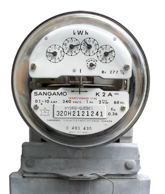
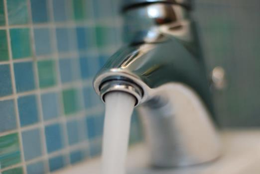

Home
Energy
Interior
Get Involved
Energy Usage
Get an idea of how you use energy in your home, and how you can be more efficient.

Energy calculators are a great way to get a general idea of how much electricity the appliances you own use and how much they cost you per month and per year.
An energy usage calculator such as this one: energyusecalculator.com will help you see what the appliances you have are using and costing you.
Use the information you found to help guide future energy use decisions.
There are also water use calculators that show you how much water you use in your daily life, directly and indirectly.
Watercalculator.org is one such site that gives a detailed overview of how your plumbing fixtures, habits, diet, and even preferred mode of transportation affect how much water you use in a day. It also gives tips on how to reduce your water use, something that will become more important as fresh water resources in metropolitan areas become scarcer.
